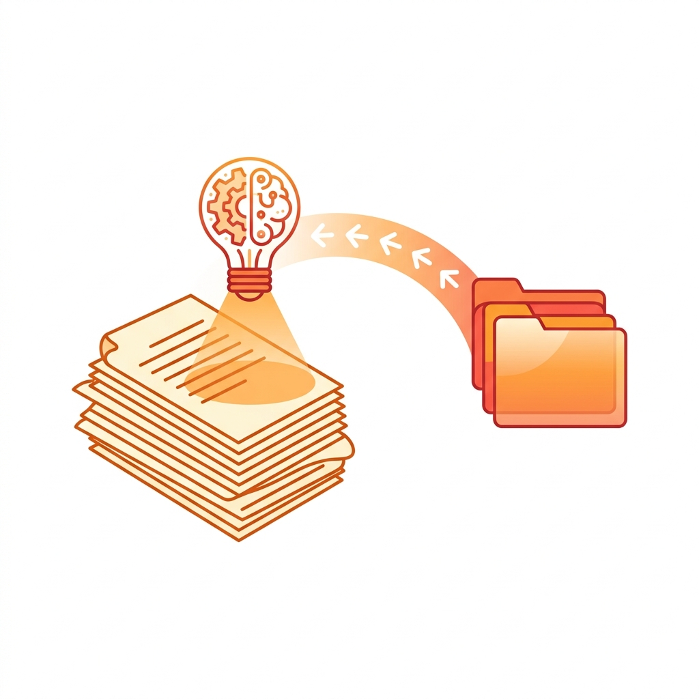
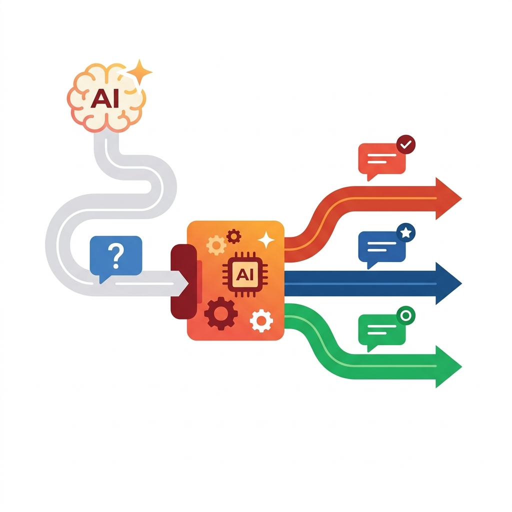
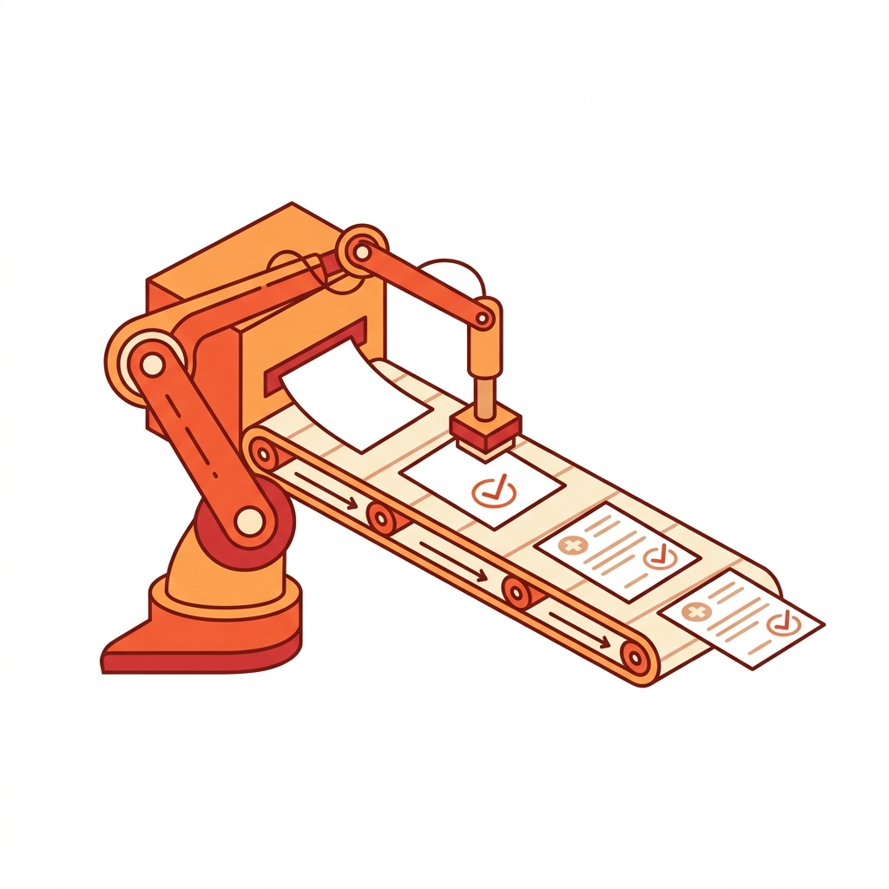
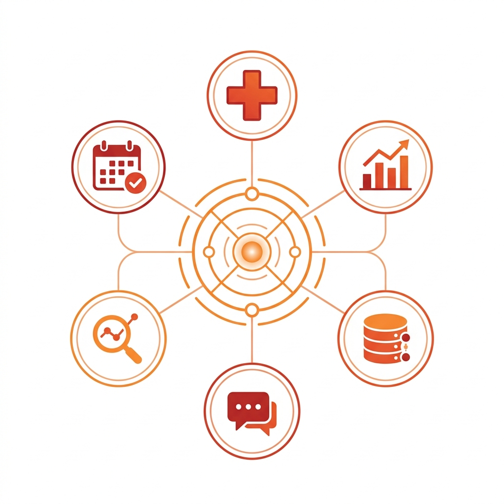
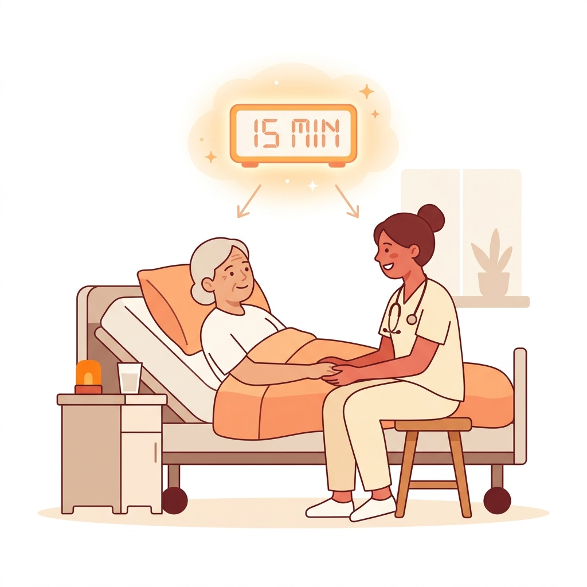

はじめに — 医療DXは一般企業と順番が違う
「何から手をつければいいかわからない」。中小医療法人のDXに関わっていると、必ずこの相談から始まる。
一般企業のDXでは「日次レポート → 問い合わせ対応 → 請求・経理」の順番で自動化せよ、という定石がある。だが、医療法人はこの順番では動かない。
理由は明確だ。医療現場では、スタッフの時間の大半がカルテ・書類・FAXに消えている。「売上を伸ばす」ではなく「患者さんに向き合う時間を増やす」がゴール。そして医療は間違えたら人の命に関わるので、AI任せにできない領域がある。
この記事では、5クリニック・51のシステムを内製してきた在宅医療法人の実体験から、中小医療法人が最初に取り組むべき3つの業務を紹介する。
1. FAX・紙書類の電子化と自動仕分け
STEP 1 — 最初にやるべき📄 紙の仕分け作業をAIに任せる
リスクが低く、効果が最も大きい。まずここから始める。

中小医療法人の現場では、今でもFAXが主要な通信手段だ。1日に数十〜数百枚届くFAXを、事務員が1枚ずつ「これは誰の？」「どの書類？」と判断して、カルテに貼り付けている。この仕分けだけで1日1〜2時間消えている。
💡 具体的にどう自動化するか
- FAXをPDFで受信する環境を作る — 複合機の設定変更だけでできる。新しい機械は不要
- AIで書類の種類と患者名を自動判別する — 今のAI（大規模言語モデル）なら、「診療情報提供書」「訪問看護報告書」などの書類種別と患者名を画像から正確に読み取れる
- 確信度が高いものは電子カルテへ貼付する — 迷うものは要確認へ回し、人が見る
削減効果の目安：1日50枚のFAXを手作業で1枚5分処理 → 自動化で約25秒/枚に。毎日4時間の削減。年間約1,000時間。
⚗️ 設計のコツ — 「事務員AI」と「医療AI」を分ける
ここで重要なのは、AIに医学的な判断は絶対にさせないことだ。
AIにやらせるのは「この書類は誰宛？何の書類？」という事務的な仕分けだけ。書類の中身を読んで診療に反映する判断は、必ず医師やスタッフが行う。
「AIは事務員。医療判断は人間。」 この線引きが、医療DXで最も大切な原則だ。
安全設計のポイント：患者が特定できなかった場合は「未確認」フォルダに入れる。誤った患者への貼付は絶対に防ぐ。安全側に倒す設計が鉄則。
2. 社内問い合わせのAI振り分け
STEP 2 — 2番目にやるべき💬 「PCが動かない」を属人化させない
IT担当が倒れても法人が止まらない体制をつくる。

中小医療法人には「IT部門」がほぼ存在しない。システムに詳しい人が1〜2人で、全拠点の「レセコンの使い方がわからない」「プリンターが動かない」を受けている。この人が休んだ瞬間に法人のITが止まる。
💡 具体的にどう自動化するか
- 問い合わせ窓口をチャットに一本化する — 電話や口頭の「ついでに聞いていい？」をなくす
- AIで問い合わせ内容を自動分類する — 「レセコン操作」「PC不具合」「ネットワーク」など、カテゴリ分けをAIに任せる
- ベンダーサポートへの案内を自動化する — レセコンやカルテシステムの問い合わせは、ベンダーの連絡先を自動案内するだけで半分解決する
- 過去の対応履歴からAI回答案を生成する — 同じ質問に何度も答えなくていい
⚗️ 承認パイプラインを入れる
ここでも「AIの出力をそのまま送信しない」が鉄則だ。
① AIが問い合わせを分類
▼
② AIが回答案を下書き（Draft）
▼
③ 担当者が確認・編集
▼
④ 送信
AIが下書きし、人間が確認してから送信する。この一手間が信頼を守る。医療の現場では「ちょっと変な回答」が重大な問題になりうるからだ。
期待効果：IT担当の対応時間 50%削減 + 対応履歴の可視化で「同じ質問が多い分野」が特定でき、研修計画の根拠データになる。
3. 定期書類の作成支援（下ごしらえ）
STEP 3 — 3番目にやるべき📋 毎月数百枚の書類の下ごしらえを仕組み化する
①②で運用ノウハウを積んでから、慎重に着手する。

訪問看護指示書、居宅介護情報提供書、在宅療養計画書。在宅医療法人では毎月数百枚の定期書類を手作業で作っている。1枚10分として、500枚なら約83時間/月。1人がフルタイムで働く時間（月160時間前後）の約半分にあたる事務作業だ。
💡 具体的にどう自動化するか
- 書類テンプレートとデータソースを整理する — 前回の書類を「引用」して作成するフローが多い。この引用を自動化する
- 記載内容の自動入力 — 患者情報・期間・前回内容はシステムから自動取得できる
- 完成した書類をPDF化して配信する — 連携事業所へのメール配信までをひとつの流れでつなぐ
なぜ3番目なのか：医療書類は患者の生命に関わる。請求書の数字が1桁違っても訂正すれば済むが、処方内容の間違いは取り返しがつかない。必ず「下ごしらえ → 医師確認 → 完成」のフローで、①②で培ったAI運用の経験値が必要。
📊 コスト削減の実例
| 項目 | 従来 | 自動化後 |
|---|
| 書類作成（月500枚） | 83時間/月 | 約3.5時間/月 |
| RPAツール利用料 | 月19.5万円 | 内製で0円 |
| FAX仕分け（日50枚） | 4時間/日 | 数分/日 |
| AI利用コスト | — | FAX1枚あたり約0.1円 |
裏で進めるべき基盤 — ID統合

3つのステップと並行して、地味だけど最も重要な基盤作業がある。それが患者IDの統合だ。
医療法人は平均5〜10個のシステムを使っている。電子カルテ、レセコン、訪問看護記録、AI文書作成、勤怠管理…。全部バラバラのID体系で、同じ患者さんが各システムで別の番号を持っている。
このバラバラなIDを統合するハブ（データベース）を作っておくと、上の3ステップ全てが格段にやりやすくなる。
- FAX自動仕分けで「この患者のカルテIDは？」を瞬時に解決できる
- 問い合わせ対応で「この患者の情報はどのシステムにある？」がわかる
- 書類の下ごしらえで、複数システムから必要な情報を自動収集できる
ID統合は「見えないインフラ」だ。道路がなければ車は走れない。ID統合がなければ、自動化システム同士が連携できない。
まとめ — 医療DXの3ステップ
Step 1：FAX・紙書類の電子化と自動仕分けリスクが低く、効果が最も大きい。毎日4時間削減
▼
Step 2：社内問い合わせのAI振り分け属人化の解消。承認パイプラインを習慣化する
▼
Step 3：定期書類の作成支援（下ごしらえ）①②で積んだ運用ノウハウで慎重に展開
⬇ 並行して
基盤：患者ID統合ハブ全システムの「真実の1つ」を作る

一般企業のDXでは「浮いた時間を売上に再投資する」がゴールだ。だが医療法人のDXでは、浮いた時間を患者さんのベッドサイドに返すことがゴールになる。自動化は目的ではない。「患者さんに専念する時間をつくる」ための手段だ。
「全部一気にやろう」は失敗する。小さく始めて、確実に回してから次に進む。これが医療DX成功の鉄則だ。